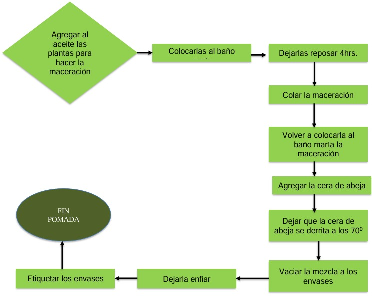

SEGMENTO DE MERCADO
Producto ofrecido: La pomada ecológica echa con productos naturales.
Necesidad o problemática que resuelve: ayuda a cuidar el ambiente con sus ingredientes a favor de él.
Este producto va dirigido a hombres y mujeres de entre 25 a 69 años de edad del municipio del valle de Toluca.Nuestra empresa se establecerá en calle Jesús Reyes Heroles no. 1900 colonia cultural en el municipio de Toluca. Según estadísticas de INEGI 2020 se registró un total de 2 353 924 habitantes en el Valle de Toluca. Como referencia se tiene que en el municipio de Toluca hay un total de 555 652 habitantes que se encuentran en un rango de edad de 25 a 69 años de edad. De los cuales solo el 57.7% son económicamente activos. Nuestro producto podrá ser adquirido por la clase media alta y media baja de Toluca. La clase media se divide en dos subgrupos: la clase media baja y la clase media alta. La primera se compone de personas que tienen ingresos moderados y que pueden tener dificultades para llegar a fin de mes, mientras que la segunda se compone de personas que tienen ingresos más altos y que pueden permitirse ciertos lujos y comodidades.
Características de la clase media.
Ingreso económico estable y moderado, acceso limitado a recursos financieros y bienes de lujo, educación y formación académica de nivel medio, estilo de vida cómodo, pero no ostentoso, trabajo remunerado en empleos de oficina, comercio o servicios, ahorro y planificación financiera para el futuro, consumo responsable y consciente, acceso a servicios básicos como salud, educación y transporte, participación activa en la comunidad y en actividades sociales, aspiración a mejorar su situación económica y social los ingresos mensuales de cada clase, clase media alta: los ingresos mensuales promedio son de 19 mil 900 pesos y el 14% de la población pertenece a este estrato, clase media baja: se incluye a los 'Godínez' porque abarca a los oficinista, técnicos, supervisores y artesanos calificados. Sus ingresos no son muy altos, pero si estables. En promedio ganan 12 mil 300 pesos mensuales y un 20 por ciento de la población se ubica aquí.
Las pomadas pueden atraer a personas conscientes de su bienestar, preocupados por la salud holística y que buscas enfoques naturales para el alivio del dolor. También puede ser apreciadas para aquellas que valoran la práctica de hábitos de vida saludables y tienen una inclinación hacia productos que reflejan un estilo de vida activo y equilibrado. También podría incluir individuos con un estilo de vida saludable, orientados hacia la naturaleza y que valoran los productos que reflejan sus preocupaciones ambientales. Además, se podría atraer a consumidores conscientes de la calidad de los ingredientes y que prefieren opciones de cuidado personal que se alineen con sus valores y filosofías de vida.
PROPUESTA DE VALOR
El producto es una pomada hecha a base de aceite reciclado, productos grasas y extractos de plantas como lo son el mentol, eucalipto, valeriana, entre otras. El producto tendrá un color natural debido a los extractos no se agregará colorantes artificiales para que su naturaleza se conserve. Su textura será sólida. El olor que esta pomada será aquel que se logre al mezclar los distintos extractos logrando un aroma natural y refrescante.
El propósito del producto es disminuir el dolor muscular o de articulaciones esto se logrará gracias a las propiedades de los extractos como lo son el romero (antinflamatoria, mejora la circulación sanguínea, alivio de dolores musculares), el mentol (antinflamatorio antipruriginoso, analgésico, antiséptico), el árnica (disminuye la hinchazón y el dolor, actúa como antibiótico), entre otras.
Se busca que el producto sea 100% natural por lo que será libre de parabenos (son productos químicos que se utilizan como conservantes en cosmética por su capacidad para evitar que crezcan microorganismos, como hongos o bacterias), que serán sustituidos por conservantes naturales como canela y otras especias.
También contendrá antioxidantes los cuales permiten combatir la acción de los radicales libres, estos se pueden obtener del aceite de aguacate, pepita de uva, el eucalipto, entre otros. Se venderá en frascos de plástico transparente con tapa de rosca, en porciones de 359 gr, con una etiqueta que mostrará los componentes, la cantidad de producto, el precio, el extracto que tiene, la finalidad de la pomada el cual será tratar dolores musculares y de articulaciones. Lo que hace al producto diferente, es que la base de su elaboración es aceite de cocina usado, lo que lo convierte en un producto amigable con el medio ambiente y no genera más contaminantes, además sirve para que el aceite quemado no termine contaminando el agua o el suelo.
CANALES DE COMUNICACIÓN Y DISTRIBUCIÓN
Como primer apoyo utilizamos canales de comunicación directos, que son de gran ayuda, ya que su medio de difusión es amplia y la mayoría de adultos jóvenes y adultos mayores las conocen y frecuentan.
Nuestro medio de difusión serán dos redes sociales que tanto jóvenes como adultos conocen Instagram y Facebook, en las cuales se encontrara información acerca de nuestra empresa; misión, visión y objetivo, además de que se mostrara el producto.
Ya que hemos destacado la sección de los canales de comunicación, ahora nos referiremos a los canales utilizados para hacerle llegar el producto a nuestros clientes. Utilizaremos canales de distribución directos ya que el producto se podrá adquirir de manera física, con algunos de los productores en nuestro establecimiento o comunicándose a través de nuestras redes sociales.
RELACIONES CON LOS CLIENTES
Al interactuar con el cliente, se optará por un lenguaje formal y respetuosa, con el objetico de transmitir confianza para que el cliente se sienta cómodo al realizar su compra. Se proporcionaron una breve explicación sobre el funcionamiento del producto, además, se considera la implementación de ofertas de precio (Oferta de Compra Uno y Lleva Otro: "Compra una pomada y llévate la segunda a mitad de precio.") y descuento para Nuevos Clientes: "Obtén un 15% de descuento en tu primera compra de pomadas."
FUENTES DE INGRESO
Debido a que nuestra fuente de ingreso es la producción y venta de nuestro producto, corresponde al tipo transaccionales. El pago de nuestro producto es en efectivo o transferencia bancaria en un solo pago.
RECURSOS CLAVE
En este apartado describe tolo lo necesario para iniciar el negocio, y se empieza por describir los recursos físicos que son todas y cada una de las partes que integran el producto físico.
Recursos físicos:
a) Materia prima: para 1 pomada de 359 gramos. El total de elaboración para una pomada es de $50.97
b) Maquinaria y herramientas
Aquí se describe la totalidad de maquinaria, herramientas y/o utensilios que se ocuparan para la elaboración del producto.
Recursos intelectuales:
Para la preparación de nuestra pomada fue importante de un especialista químico farmacéutico biólogo, para mantener las propiedades medicinales de todos los ingredientes y su efecto en el cuerpo de beneficioso; además de mantener la naturaleza del producto.
ACTIVIDADES CLAVE
a) Actividades de producción
-Solicitar la materia prima (aceite de cocina, cera de abeja, menta, eucalipto, árnica, romero)
- Almacenamiento y mantenimiento de materia prima
- Selección de materia prima
-Registro de entrada y salida de materia prima
-Limpieza de la materia prima
- Elaboración del producto
Forma de preparacion
Para una pomada:
Ingredientes
Menta • Eucalipto (50 gramos) • Árnica (50 gramos) • Romero (50 gramos) • Cera de abeja (31.25 gramos) • Aceite de cocina (250 ml)
Preparacion
• Medir los 250 ml y colocar en el contenedor de vidrio
• Añadir las plantas para macerarlas
• Colocar una olla con agua, se hará a baño maría; el agua debe de hervir,
pero el aceite no.
• Dejar macerar por 4 hrs. (se deja en este tiempo al fuego)
• Colocar la maceración sobre el colador y la manta de cielo
• Retirar todo el exceso que se quede en las plantas
• Volver a colocarlo a baño maría
• Añadir la cera de abeja
• Dejar que la cera de abeja se derrita a unos 700
• Antes de que se enfrié colocar en los envases.
• Dejar solidificar la mezcla
• Etiquetar cada envase
• Comercialización del producto
SOCIOS O ALIADOS CLAVE
1. Competidores
Buscamos la forma de crear una alianza entre competidores, que ofrecen un producto similar al nuestro para aumentar las ventas y lograr ser reconocidos en el mercado.
Directos:
Algunas de las empresas más conocidas en México que fabrican un producto parecido al de nosotros incluyen Genomma Lab, Grupo Grisi, y Riger Naturals
Indirectos:
Súper Naturista, Edo Mex, Toluca, Centro (Rayón), Ignacio López Rayón No. 100 Local 5 y 6, 5 de mayo, Toluca, Estado de México 50010, México. Empresa mexicana fundada en 1982; pionera y líder en el sector naturista, presentes en todo México con más de 100 sucursales. Expertos en la comercialización de productos naturales que benefician a la salud, como son; vitaminas, minerales, suplementos, nutrición deportiva, alimentos, bebidas y productos para el cuidado personal.

2. Proovedores
Todos aquellos nos proporcionaron materia prima y nos dieron un descuento por la compra de materia primar por mayoreo:
• Avicultor
• Hierbero
• Mercado libre
3. Clientes
Son sumamente importantes para nosotros debido a que es por ellos que existimos y buscamos la forma de poder aliviar todos sus dolores. Y no solo por ellos existimos, sino que también por ellos nos mantenemos, ya que al comprar nuestro producto nos ayudan a poder seguir elaborando y vendiendo más.
4. Gobierno
Es un gran aliado debido a que es el que nos provee de los servicios básicos, como el drenaje, el agua y luz; que son indispensables para la elaboración de nuestro producto.
ESTRUCTURA DE COSTOS